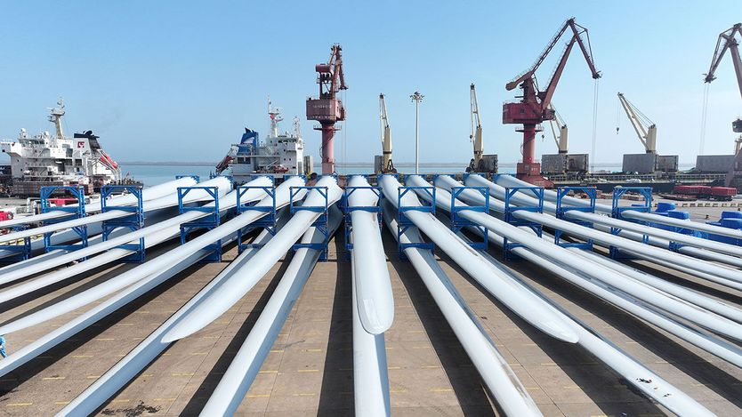

欧洲应如何应对新一轮中国冲击
How Europe should deal with the new China shock
光是囤积“二次打击”式的贸易武器还不够

- 欧盟长期被两个中国难题困扰：中国汽车、机械等产品竞争力日增，而法德应对思路相左——法国主张设壁垒，德国因在华生意庞大而倾向接触，政策因此混乱。如今第二波中国冲击正掏空德国工业核心地带，两国转向法式强硬，联名要求赋予欧盟委员会广泛的反击权。
- 所谓“二次打击”，是借自核威慑的说法，指遭到报复后能迅速还手的能力。这类经济武器或许值得拥有：中国去年限制稀土出口，确实让欧洲军工企业等断了关键原料。但工具必须设计精细、用得克制，世上更没有一招制胜的银弹。
- 欧中贸易已严重失衡：中国对欧盟的贸易顺差如今相当于欧盟经济总量的百分之二，约合每天十亿欧元，电动汽车、光伏和风电设备大量涌入。与此同时，欧洲制药等产业又高度依赖中国原料，如阿莫西林的前体七成以上来自中国，这种相互依赖在对峙年代相当危险。
- 真正的威慑来自多元化，而非加税威胁。欧盟应扩大与巴西、加拿大等资源国的自由贸易，并削减要求企业监控供应链的繁重监管。美国在对华较量中挥舞关税并未奏效，还伤及自身；在欧洲找到替代供应之前，中国多半会认定先服软的是欧洲。
欧盟长期以来面临两个中国难题。第一个是竞争：中国出口的汽车、机械，以及其他欧洲曾经更擅长制造的产品越来越有竞争力，在欧洲本土和海外市场都构成挑战。第二个是欧盟这对经济上的“权力夫妻”在如何应对第一个难题上看法不一。法国主张对来自中国的进口设置贸易壁垒；德国制造商在中国卖出了大量产品，因而更倾向于接触。结果是政策一团乱麻。
如今第二波中国冲击正在掏空德国工业核心地带，这对搭档也团结起来，转向法国式的强硬。10月5日，两国在致欧盟委员会的一封信中提议赋予布鲁塞尔广泛权力：如果欧盟对某国施加贸易惩罚，而该国进行不成比例的反击，欧洲应当能够迅速予以回击。信中并未点名中国，但人人都知道目标是谁。在10月15日的峰会上，其他欧洲领导人将决定是否支持这份法德提案。
某些“二次打击”型经济武器或许确实值得拥有。中国并不是一个自由、公平的贸易者。去年它对稀土实施出口限制，让欧洲军工企业等群体陷入关键投入品短缺的困境。法德提案的目标之一，就是让中国在故技重施之前三思。但经济工具必须精心设计、审慎使用。更重要的是，世上并没有一招制胜的银弹。要让贸易武器成为可信的威慑，唯一办法是花苦功夫建立替代供应链、提高欧洲工业的竞争力。
欧中贸易已变得越来越不对称。2000年，也就是中国加入世界贸易组织的前一年，中国对欧盟的贸易顺差（统计口径包含此后入盟的多数国家，且当时尚未剔除英国）约相当于欧盟国内生产总值的0.6%。如今这一比例已达2%，相当于每天近10亿欧元（11亿美元）。中国正用电动汽车、太阳能电池板、风力发电机等产品冲击欧洲市场——对华鹰派指称，这些产品因补贴和汇率低估而被人为压低价格。
与此同时，欧洲制造商往往依赖中国的投入品，而且不只是稀土。今年4月，智库欧盟安全研究所对56种药物有效成分及其前体化学品做了压力测试，结果发现，其中20种一旦来自中国的供应中断，将对欧洲制药企业造成“严重后果”。常用抗生素阿莫西林的前体有超过70%来自中国。在相互对峙的时代，这种依赖十分危险。
为了加固欧盟的防线，法德希望欧盟更积极地动用现有工具，放宽规则使制裁适用于整个行业而非仅针对个别企业，并通过扩充贸易官僚队伍来简化流程。
就中国而言，它也有理由不去激怒欧盟。国内竞争惨烈，美国又筑起关税高墙，这意味着许多中国企业若不能把产品卖到欧洲就会亏钱。在少数关键领域，中国同样依赖欧洲：例如它需要荷兰的芯片制造设备，也需要获得飞机零部件。
但如果欧盟真正下功夫实现多元化，中国就会更认真地对待欧洲的新威胁。这意味着扩大自由贸易，尤其是与那些拥有欧洲所需资源的国家，比如在稀土方面资源丰富的巴西和加拿大。这也意味着减少繁文缛节——目前欧洲企业被要求监控自家供应链，负担沉重。法德那封信过于看重加征关税的威胁。在美国与中国的正面交锋中，这一威胁并未奏效，部分原因正是关税会给自身造成伤害。在欧洲拥有替代供应来源之前，中国或许会认定，任何一场贸易较量中先服软的都将是欧洲。